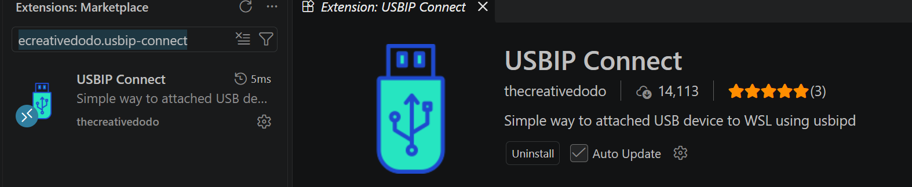
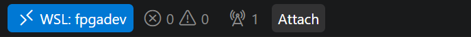
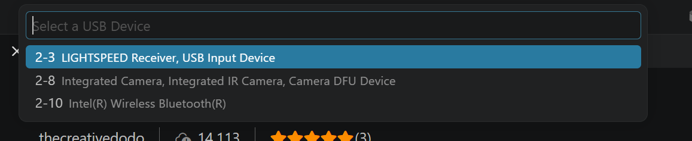

Forward the FPGA board into WSL¶
The toolchain is installed and anvil doctor is green, but anvil program cannot
find the board. That is expected, and it is not a broken install.
WSL2 is a virtual machine. It has no USB ports of its own, so a board plugged into
your laptop is visible to Windows and invisible to Linux. openFPGALoader runs
inside WSL, so something has to hand the USB device across. That something is
usbipd-win, which
wsl-setup.ps1 already installed for you.
What is left is the part that cannot be done once and forgotten: attaching the board, after every reboot and every replug.
WSL only — the whole page
This is a WSL2 problem only. On Ubuntu the board is already a local USB device and the udev rule the installer added is all you need.
Find your board in the list¶
Every method below starts the same way: you have to know which entry in the list is the board. The reliable way to find out is to look twice.
First, with the board unplugged, open a PowerShell and run:
You will see your mouse receiver, webcam, Bluetooth radio and whatever else is built into the laptop. Ignore all of it — that is the baseline.
Now plug the board in, switch it on, and run the same command again. The new entry is your board. On the machine these instructions were written on it appeared as:
Yours may read differently. The name comes from the USB chip, not the board, so a different board — or the same board on another machine — can be listed under another name and another BUSID. Two things are reliable:
- the VID:PID is
0403:6010(FTDI, the USB chip on the Nexys A7) - it is the entry that was not there a moment ago
Write down the BUSID. Every method below needs it, and it can change when you use a different USB port.
Nothing listed?
If no new entry appears when you plug the board in, Windows itself cannot see it and none of the methods below will help. Check the cable — some USB cables carry power only — then the board's power switch, then another port.
Pick one of the three methods below. They all do the same thing.
Method 1 — VS Code extension¶
The easiest one if you already work in VS Code, because the button sits next to everything else you use.
Connect VS Code to the toolchain's distro first
VS Code keeps two separate sets of extensions — one on Windows, one inside each
WSL distro — and this one has to live inside the distro you installed the
toolchain into (default name anvil). Installed on the Windows side, or into a
different distro, the button either never appears or hands the board to the
wrong Linux.
Open the distro with WSL: Connect to WSL using Distro… from the command
palette, and check the bottom-left corner reads WSL: <your distro> before
going any further.
With that window open, install USBIP Connect
(thecreativedodo.usbip-connect) from the Extensions marketplace — VS Code then
installs it into the distro rather than onto Windows:

An Attach button appears in the status bar at the bottom of the window,
next to that same WSL: indicator — which is how you can tell at a glance that it
will attach to the right distro:

Click it and a device picker opens at the top of the window:

There is no board in that screenshot — it was taken with nothing plugged in, which is why only a mouse receiver, a camera and a Bluetooth radio are listed. With your board connected and powered on it appears in this same list, and that is the entry you pick: the one matching the BUSID you noted above.
The extension binds and attaches by itself, so no Administrator PowerShell is needed.
Picking the wrong one is recoverable
Attaching your mouse receiver or webcam hands that device to Linux and takes it from Windows — briefly confusing, not harmful. Attach it back, or unplug and replug it.
Method 2 — wsl-usb-manager¶
A small Windows GUI that does the same job outside VS Code, with a device list you can leave open: https://github.com/nickbeth/wsl-usb-manager
Follow the install and usage instructions in that project's README. It is not ours and we do not pin a version of it.
Method 3 — command line¶
Worth knowing even if you use a GUI: it is what they call underneath, and it is the only method that works over SSH or from a script.
There are two steps, and they are not the same kind of step.
Once per board — registers the device for sharing. Needs an Administrator PowerShell, and survives reboots:
Every session — hands the device to WSL. A normal PowerShell is enough, and this is the one you repeat after each reboot or replug:
Confirm it arrived, from inside WSL:
Then anvil program behaves exactly as it does on native Linux — the installer
already added the udev rule, so no sudo.
Not having to repeat it¶
--auto-attach re-attaches the device when it is unplugged and plugged back in, at
the cost of leaving that PowerShell window open:
Giving the board back to Windows¶
usbipd detach --busid 2-4 # end this session's attachment
usbipd unbind --busid 2-4 # undo the registration (Administrator)
Troubleshooting¶
Click an entry to expand it. Anything not here is in the general Troubleshooting & FAQ.
usbipd is not recognised as a command
usbipd-win was never installed. Step 2d of the
WSL2 guide skips it when winget
is absent or the script was not run from an Administrator PowerShell — it
warns and carries on rather than failing the whole setup.
From an Administrator PowerShell:
usbipd list does not show the board
Windows itself cannot see it, so nothing on this page will help until that is fixed. In order of likelihood: the cable (many USB cables carry power only), the board's power switch, then another port.
Compare the list with the board unplugged and plugged in — the entry that appears is the one you want.
usbipd bind says access denied
You are not in an Administrator PowerShell. bind registers the device
system-wide and needs one; attach does not.
The VS Code extension and wsl-usb-manager both handle this for you, which is why neither asks for elevation.
usbipd attach says the device is not shared
bind has not been run for that BUSID. It is a one-time step per board and it
survives reboots:
Attach succeeds, but lsusb shows nothing
The kernel modules are missing inside the distro. Re-run wsl-setup.ps1 —
its step 6 checks vhci-hcd and ftdi_sio and says what to do.
The common case is WSL still running an older kernel than the one it has installed; a running VM keeps the kernel it booted with until every distro stops:
The VS Code Attach button is missing
The extension was installed on the Windows side instead of inside the distro. VS Code keeps the two sets separately.
Check the bottom-left corner reads WSL: <your distro>, then install it again
from that window — with the window connected, the marketplace entry offers
Install in WSL.
Attached, but WSL still cannot see it
You may have more than one distro. wsl --list shows them all, and the board
goes to whichever one attached it — which is not necessarily the one holding
the toolchain.
It worked yesterday and not today
Expected, not a fault. The attachment does not survive a reboot, and unplugging
the board ends it too. Run the attach step again.
To avoid repeating it, --auto-attach re-attaches on replug for as long as
that PowerShell window stays open.